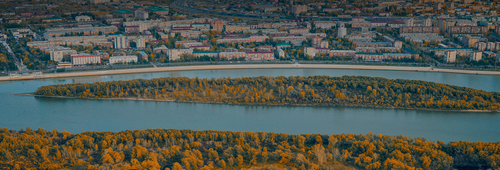

Омский Водоканал
Решайте вопросы
водоснабжения онлайн
Показания, обращения и документы.
Всё необходимое для жителей и организаций Омска.
Популярные сервисы
Личный кабинет
Ваши лицевые счета,
заявки и документы
Передать показания
Показания приборов
и история измерений
Отключения воды
Плановые работы
и информация по адресу
Исследования воды
Заказ анализа
и результаты лаборатории
Заказать воду
Заявка на воду
и отслеживание заказа
Нет воды? Проверьте свой адрес
Сведения об отключениях, сроках работ и точках подвоза воды.
Информация для абонентов
Объявления водоканала
Загружаем опубликованные объявления…
Просто и без очередей
Начните с личного кабинета
Создайте учётную запись, подключите лицевой счёт
и пользуйтесь сервисами в удобное время.
- 01
Зарегистрируйтесь
Укажите имя пользователя и подтвердите контакт.
- 02
Подключите лицевой счёт
Подайте запрос на доступ. Его проверит сотрудник.
- 03
Пользуйтесь сервисами
Передавайте показания и следите за своими обращениями.
Открытая информация
Вода нашего региона
Мы на связи
Есть вопрос?
Напишите нам
Ответ и статус обработки будут доступны
в карточке вашего обращения.
Электронная почта: support@vodokanal.test
Телефон и почта тестовые.Для связи используйте обращение через кабинет.